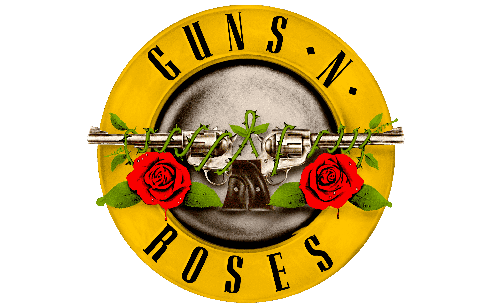
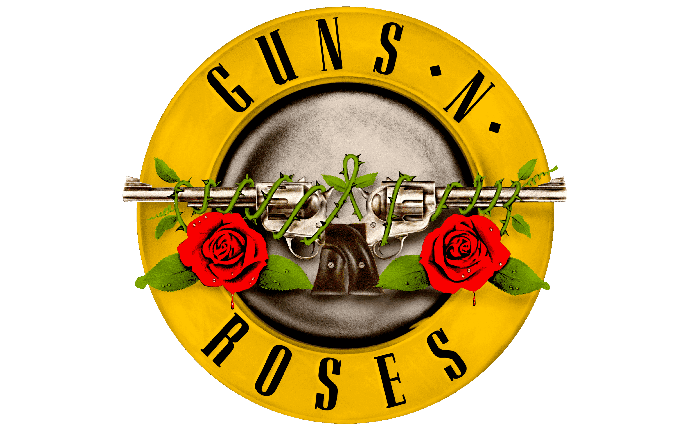
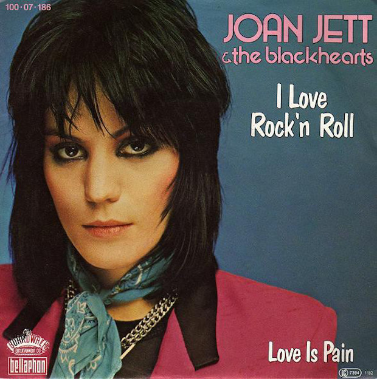

Favourite Bands
 

Guitar Covers
Arctic Monkeys
Do I Wanna Know?
Arctic Monkeys are a British rock band formed in
Sheffield, England, in 2002. The band consists of Alex Turner
(lead vocals, guitar, keyboards), Jamie Cook (guitar, keyboards),
Nick O'Malley (bass guitar), and Matt Helders (drums).
"Do I Wanna Know?" is a song by the British
rock band Arctic Monkeys, released in 2013 as the lead single from
their fifth studio album, "AM." Lyrically, it explores themes of
desire, uncertainty, and longing in a romantic relationship, with
the narrator questioning whether their love interest shares their
feelings.
Joan Jett
I Love Rock'n Roll
Joan Jett is an American rock musician, singer,
songwriter, and producer, born on September 22, 1958, in
Wynnewood, Pennsylvania.
In 1981, Joan Jett formed the
Blackhearts, with whom she achieved commercial success. Their 1981
album "I Love Rock 'n Roll" became a massive hit, featuring the
iconic title track, which topped the charts in the US for several
weeks. The album solidified Jett's reputation as a fierce rocker
with a rebellious attitude.
Guns N' Roses
Sweet Child o' Mine
Guns N' Roses is an American rock band formed in
Los Angeles, California, in 1985. The band's lineup originally
consisted of vocalist Axl Rose, lead guitarist Slash, rhythm
guitarist Izzy Stradlin, bassist Duff McKagan, and drummer Steven
Adler. They quickly gained fame with their raw and energetic
performances, blending elements of hard rock, heavy metal, and
punk rock.
"Sweet Child o' Mine" is one of the most iconic
songs, released in 1987 as part of their debut studio album,
"Appetite for Destruction." The song features a memorable guitar
riff played by Slash, complemented by Axl Rose's soulful vocals.
Lyrically, "Sweet Child o' Mine" explores themes of love and
admiration, with Axl Rose expressing his affection for his
romantic partner.

DB Music
My Song
Dusan Borojevic started engaging in music at the age of 7. His first instrument was the accordion, although he always wanted to start with the guitar. After 2 to 3 years of attending accordion classes at the 'Josif Marinkovic' music school in Vrsac, he began learning the guitar (at the age of 10) at the same school. As the music theory and solfeggio teachers noticed his talent for singing, they encouraged him to pursue vocal training, so at the age of 16, he started taking solo singing lessons. Despite his love for classical music, which he perhaps values the most, after completing his education, he continues to focus on rock, pop, and blues genres.
Metallica
Nothing Else Matters
Metallica is an American heavy metal band formed
in Los Angeles, California, in 1981. The band's lineup originally
consisted of vocalist/guitarist James Hetfield, drummer Lars
Ulrich, guitarist Dave Mustaine, and bassist Ron McGovney.
However, Mustaine was soon replaced by Kirk Hammett, and Cliff
Burton took over on bass.
"Nothing Else Matters"
is one of Metallica's most iconic and enduring songs, released in
1992 as the third single from their self-titled album, commonly
referred to as the "Black Album." The song showcases a departure
from the band's usual thrash metal style, featuring a more
introspective and melodic sound. Written by vocalist/guitarist
James Hetfield, "Nothing Else Matters" delves into themes of love,
trust, and vulnerability. The song's lyrics express a deeply
personal sentiment, reflecting Hetfield's struggles with being
away from his then-girlfriend while on tour.